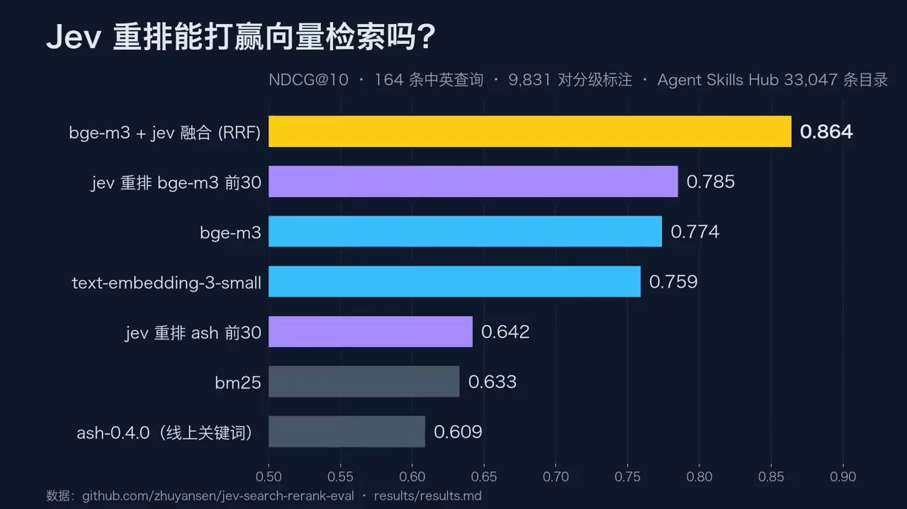
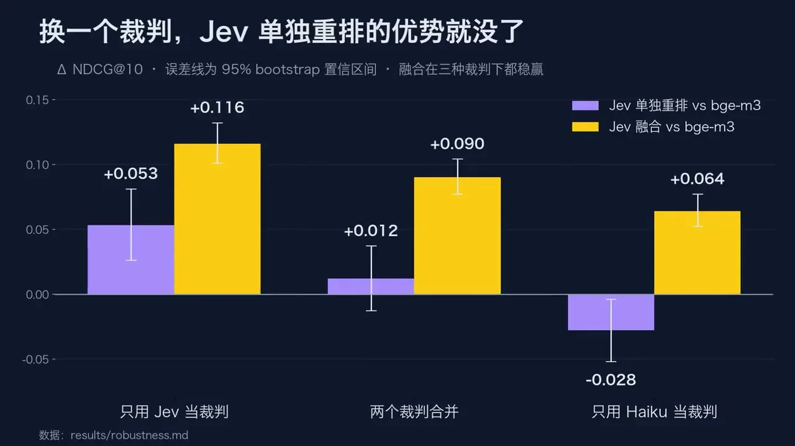

体験
この事例の画面は、製品の操作画面ではなく、評価の結果を読む人に向けた図である。要点は、結論と一緒に、その結論がどの前提に左右されるかを見せていることにある。
- 2枚目は、同じ比較を、採点役を替えて3回並べる。Jevが採点するとJevが良く見え、別のモデルが採点すると逆転する。評価する側とされる側が同じだと結果が偏ることを、1枚で読ませる。
- 誤差の棒（95%の信頼区間）が、差が0をまたぐかどうかを示す。Jev単独の優位は区間が0にかかり、融合は3つともかからない。
- 見出しが、結論を文で言い切っている。グラフを読めなくても、何が分かったかは伝わる。
- 図の下に、元のデータの場所（results/…）が書かれている。ただし、そのリポジトリは調査時に開けず、数値を元の表で確かめられていない。
- 利用者が問いを入れて結果を見比べる画面は、示されていない。
キャプチャ
{kind=link}

（原寸の画像を開く）{kind=link}

（原寸の画像を開く）見る箇所1枚目の見出し（Jevの並べ直しはベクトル検索に勝てるか）、条件の行（NDCG@10、164件の中国語・英語の問い、9,831組の採点、33,047件の目録）、方式ごとの棒。2枚目の見出し（採点役を替えると、Jev単独の並べ直しの優位は消える）、95%の信頼区間、採点役ごとの3組の棒
入力から画面の変化まで
-
判断への入力
検索の問いと、候補の上位30件。動画に映る説明文では、1つの問いにつき1回の呼び出しで、上位30件を並べ直す。
-
Jevの判断
説明文の表記は「jev-score」で、候補の関連の度合いをScoreで評価し、その順に並べ直す。別に、採点の一部にもJevが使われており、これが2枚目の論点になる。
-
結果がUIをどう変えるか
1枚目の棒は、NDCG@10で、bge-m3とJevの融合（RRF）0.864、Jevでbge-m3の上位30件を並べ直し 0.785、bge-m3のみ 0.774、など。2枚目は、bge-m3との差を採点役ごとに示す。Jev単独の並べ直しは、Jevだけが採点すると +0.053、2つの採点を合わせると +0.012、Haikuだけが採点すると −0.028。融合は +0.116、+0.090、+0.064 で、3つとも正。
- 判断型の見立て
- Score出典に明記
- 動画に映る説明文が、並べ直しを「jev-score」、Jevのscoreによる並べ直しと表記している。実装との一致は確かめていない。
Jevとの適合
問いと候補の組に対して、関連の度合いを素早く評価する使い方は、並べ直しに合う。ただし、この評価自体が、Jev単独の並べ直しの優位は採点役に左右されると示している。作者の図が支持するのは、既存の埋め込み検索と融合して、2つ目の信号として使う形である。いずれも作者の測定で、こちらでは確かめていない。
確認範囲と未確認事項
根拠は限定的で、調査監査の評価はB（追加の確認が要る段階）。作者による投稿動画から静止画を確認。結果を公開したとされるリポジトリは、調査時に開けなかった。数値はすべて作者のグラフの表示であり、元の表でも再計算でも確かめていない。利用者が検索する画面や、やり直しの手段は示されていない。これは評価の設計の事例であり、Jevが検索を常に良くするという証拠ではない。
- 確認済み動画から得た2枚の静止画に見えるグラフ（見出し、条件の行、方式ごとのNDCG@10、採点役ごとの差と信頼区間）。動画に、リポジトリのREADMEとみられる説明文が映ること
- 未検証数値の正しさと再現性、元の表、リポジトリの公開の有無（調査時は開けなかった）、採点の手順、利用者が検索する画面、他の目録や問いでの結果
- 推定扱いなし。質問型は、動画に映る説明文の表記（jev-score、Scoreで並べ直す）による。表記が実際の実装と一致するかは確かめていない
- 引用動画から必要な範囲の静止画を切り出して引用。権利は作者に帰属する